Each image is an executed native field. Parent links name actual retained earlier rungs. Atlas references indicate related construction families, rather than certified image equality.
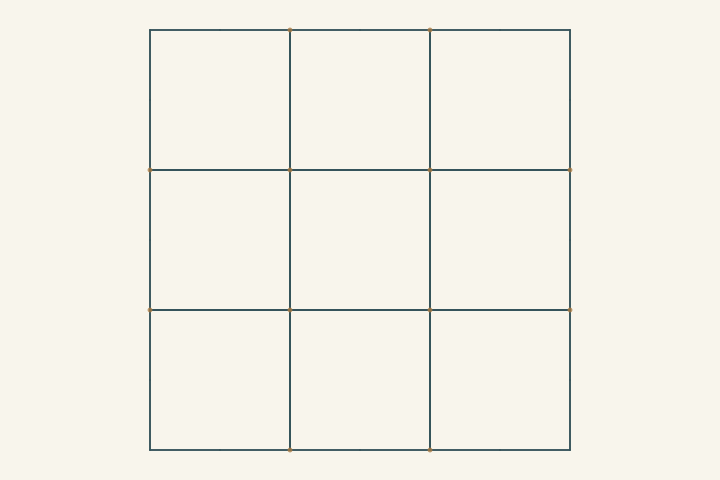
Starting structure · Shared starting construction
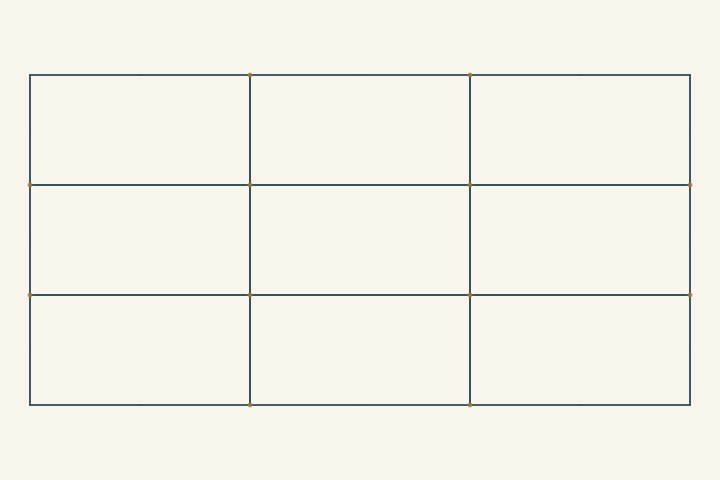
From L00 · Rectangular grid; precursor to B01 and B02
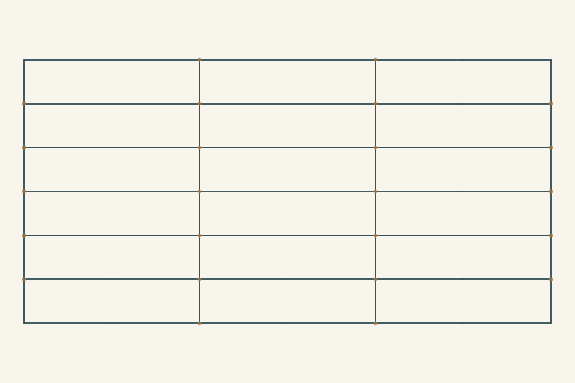
From L01 · B01-family construction
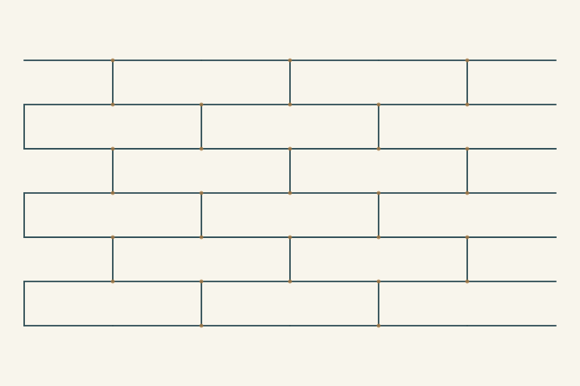
From L02 · B01-like running bond
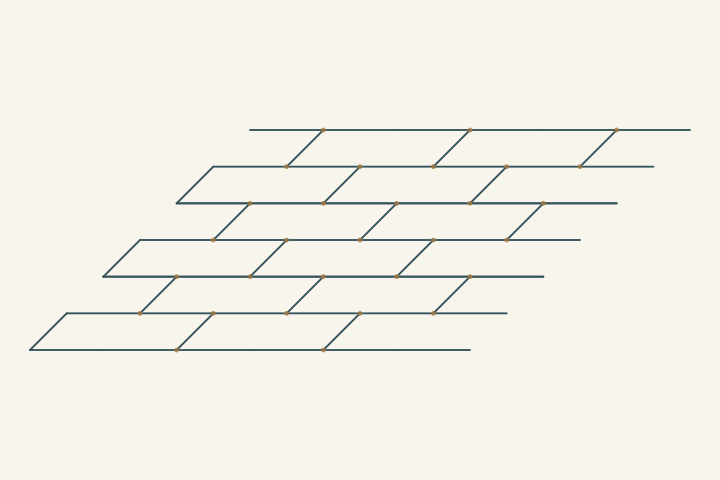
From L03 · B19-like oblique running bond
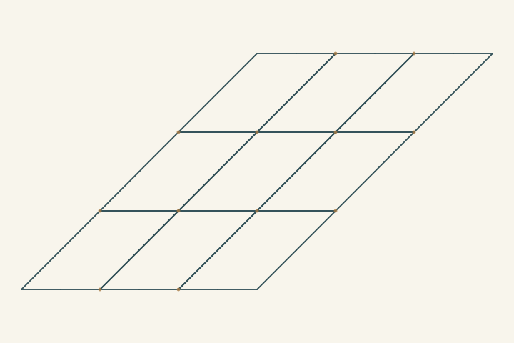
From L00 · B15-like oblique quadrilateral grid
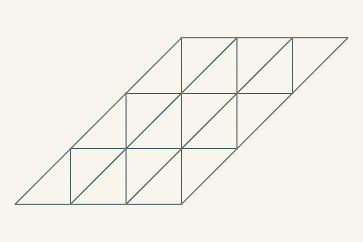
From L05 · B16-like triangular network
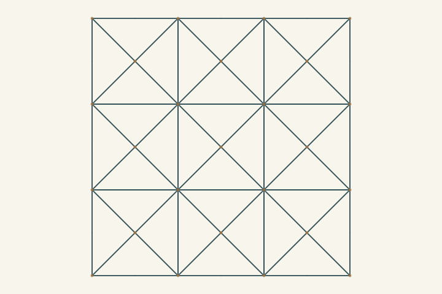
From L00 · B18-like square grid with diagonals
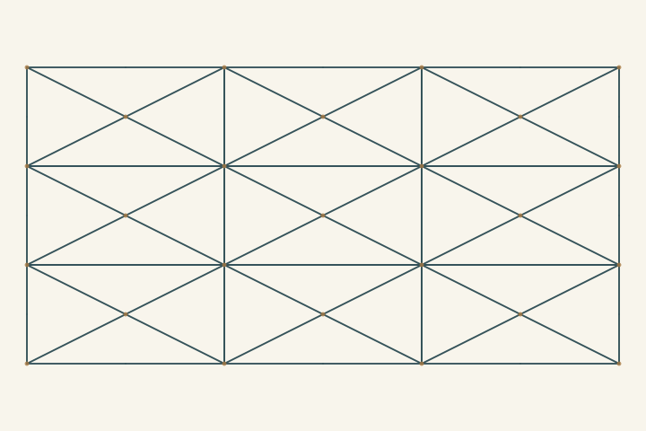
From L07 · B17-like stretched diagonal network
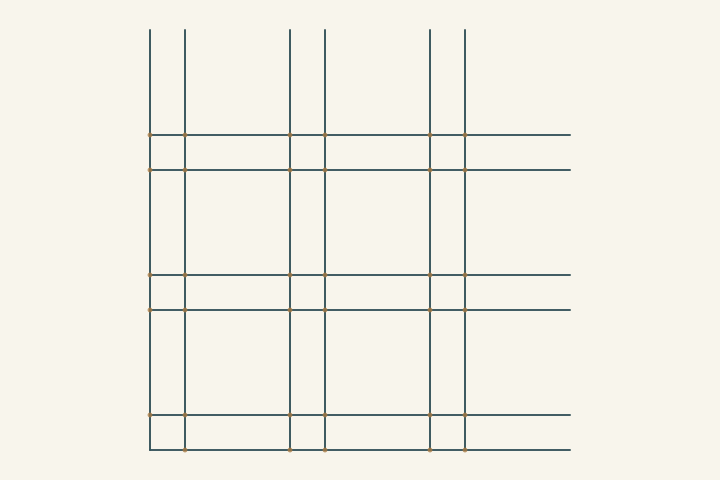
From L00 · B07-like paired orthogonal bands
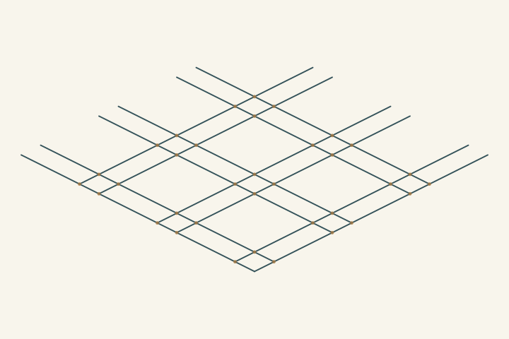
From L09 · B08-like intersecting ribbons
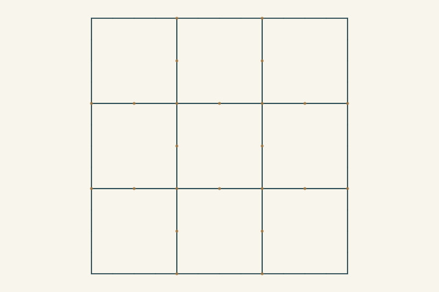
From L00 · B06-family preparation
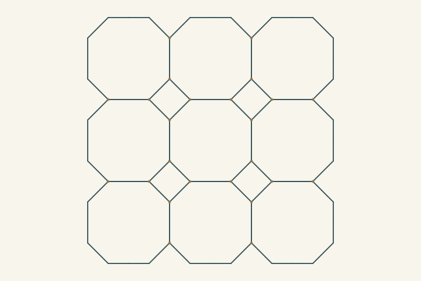
From L11 · B06-like octagon and interstitial diamond field
From L01 · B02-family assembly preparation
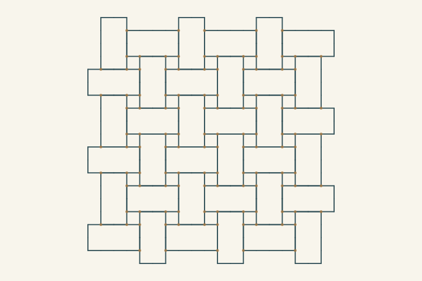
From L13 · B02-like basket rectangles and square gaps
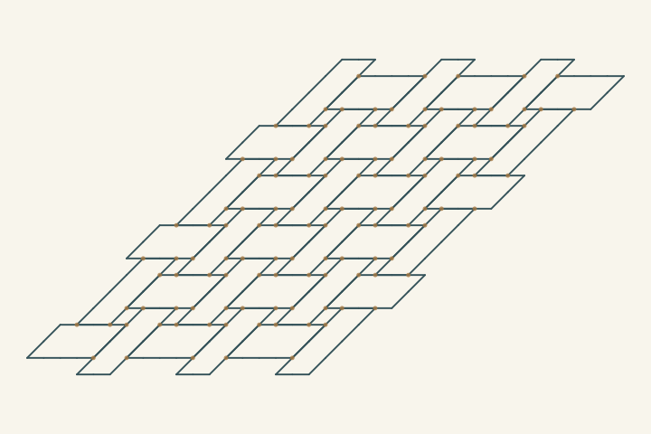
From L14 · Exploratory oblique basket branch
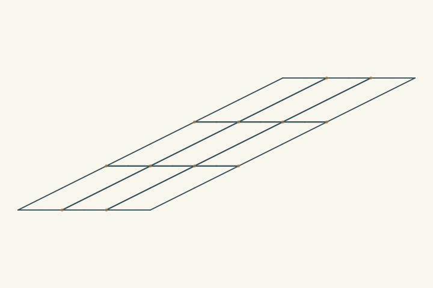
From L00 · New sibling of the oblique-grid family
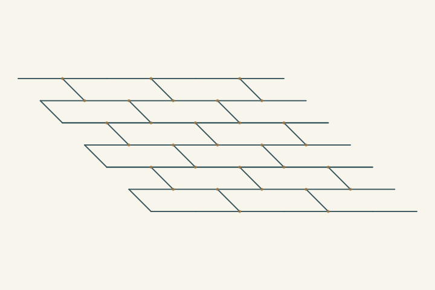
From L03 · New sibling of the oblique-brick family
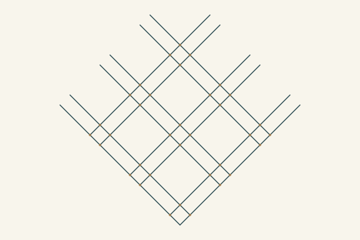
From L09 · New sibling of the ribbon family